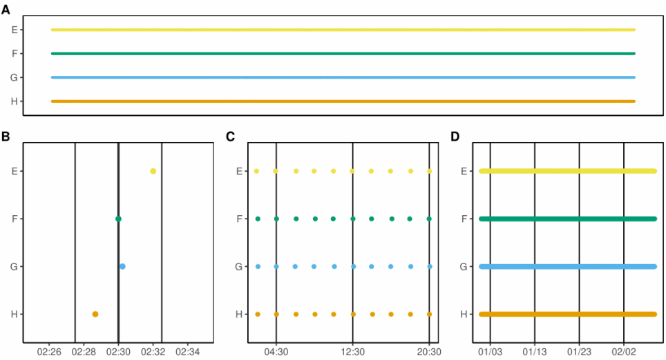
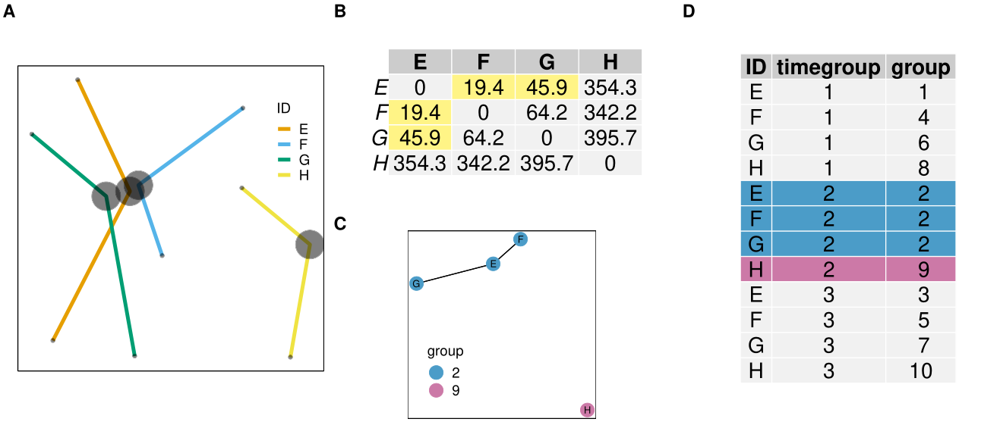
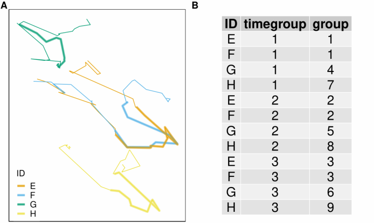
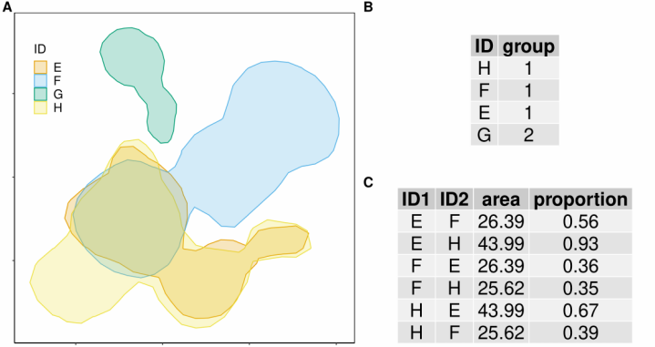
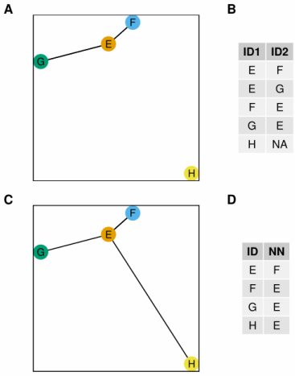

News - Installation - Usage - Contributing
spatsoc is an R package for detecting spatial and temporal groups in GPS relocations. It can be used to convert GPS relocations to gambit-of-the-group format to build proximity-based social networks with grouping and edge-list generating functions. In addition, the randomizations function provides data-stream randomization methods suitable for GPS data and the get_gbi function generates group by individual matrices useful for building networks with asnipe::get_network.
See below for installation and basic usage.
For more details, see the blog post and vignettes:
News
R-spatial evolution
spatsoc has been updated according to the R-spatial evolution, to remove deprecated package dependencies in favour of modern spatial R packages. In our case, this means replacing rgeos, rgdal and sp with sf.
Below is a list of user-side differences for spatsoc users:
- spatsoc now depends on
sf,unitsinstead ofrgeosandsp -
build_linesnow returns ansfLINESTRING object -
build_polysnow returns ansfPOLYGON/MULTIPOLYGON object -
group_linesnow accepts an inputsfLINESTRING object (argument “sfLines”) and internally usessf::st_intersects,sf::st_buffer, etc instead ofrgeosfunctions -
group_polysnow accepts an inputsfPOLYGON/MULTIPOLYGON object (argument “sfPolys”) and internally usessf::st_intersects,sf::st_area, etc instead ofrgeosfunctions.group_polysnow returns area and proportion of overlap (%) whenarea = TRUEwith respective units using theunitspackage
The details of these changes are available in PR 50.
If required, the old version using retired spatial packages can be installed with the following but please note that in October 2023 rgeos, rgdal and maptools will no longer be available on CRAN.
remotes::install_github('ropensci/spatsoc@v0.1.17')We wrote a targets workflow, available at github.com/robitalec/targets-spatsoc-networks. targets is an incredible package for designing workflows in R and, with it, we can reproducibly run all steps from raw telemetry data to output networks and metrics. Check it out and let us know how it works for you!
Edge-list generating functions added:
edge_nnedge_dist
and dyad id function:
dyad_id
(feedback welcome as always!)
Both documented further in a vignette: Using edge list and dyad id functions.
Also, our article describing spatsoc is published at Methods in Ecology and Evolution. Link here. Thanks to reviewers and editors at rOpenSci and at MEE.
More detailed news here.
Installation
# Stable release
install.packages('spatsoc')
# Development version (choose one option)
install.packages('spatsoc',
repos = c('https://robitalec.r-universe.dev',
'https://cloud.r-project.org'))
remotes::install_github('ropensci/spatsoc')spatsoc depends on sf, see here for help installing.
Usage
Load package, import data
spatsoc expects a data.table for all of its functions. If you have a data.frame, you can use data.table::setDT() to convert it by reference. If your data is a text file (e.g.: CSV), you can use data.table::fread() to import it as a data.table.
library(spatsoc)
library(data.table)
DT <- fread(system.file("extdata", "DT.csv", package = "spatsoc"))
DT[, datetime := as.POSIXct(datetime, tz = 'UTC')]Temporal grouping
group_times groups rows temporally using a threshold defined in units of minutes (B), hours (C) or days (D).

Spatial grouping
group_pts groups points spatially using a distance matrix (B) and a spatial threshold defined by the user (50m in this case). Combined with group_times, the returned ‘group’ column represents spatiotemporal, point based groups (D).

group_lines groups sequences of points (forming a line) spatially by buffering each line (A) by the user defined spatial threshold. Combined with group_times, the returned ‘group’ column represents spatiotemporal, line overlap based groups (B).

group_polys groups home ranges by spatial and proportional overlap. Combined with group_times, the returned ‘group’ column represents spatiotemporal, polygon overlap based groups.

Edge-list generating functions
edge_dist and edge_nn generate edge-lists. edge_dist measures the spatial distance between individuals (A) and returns all pairs within the user specified distance threshold (B). edge_nn measures the distance between individuals (C) and returns the nearest neighbour to each individual (D).

Contributing
Please note that this project is released with a Contributor Code of Conduct. By participating in this project you agree to abide by its terms.
Development of spatsoc welcomes contribution of feature requests, bug reports and suggested improvements through the issue board.
See details in CONTRIBUTING.md.